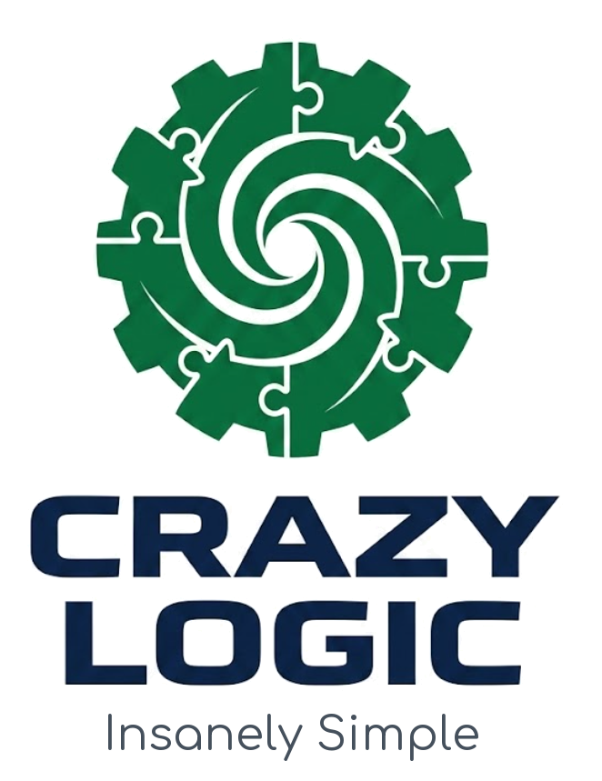

CrazyLogix UI Component Catalog
A comprehensive look-and-feel library showcasing buttons, form controls, indicators, badges, cards, data tables, and modal dialogs styled with semantic CrazyLogix design tokens.
Brand Identity & Logo Assets
Vector SVG and raster PNG brand marks rendered across light, dark, and transparent surfaces.
The rasters used to carry a baked-in #f3f3f3 export matte and were fully opaque, so
“transparent” and “dark” below were a light-grey rectangle on whatever sat behind them. The matte is gone; the
dark-ground variants are separate files.
crazylogix_logo.svg
Resolution-independent vector mark for UI chrome, navbars, and responsive headers. The white badge disc is part of the artwork, so this file reads on either ground.
crazylogix_logo_mono.svg
Badge-less, single-path, no baked ink — the mark follows whatever colour it is
given. This was the asset with no dark answer: a green-on-forest mark placed on a
near-black bar read at 2.2:1. Inline it or mask it;
currentColor does not survive an
<img>.
crazylogix_logo.png
High-resolution bitmap asset for application icons and native splash screens.
The matte is stripped to true alpha; crazylogix_logo_dark.png
carries the ink lifted to #16a34a for near-black grounds.
logoandname.png

Light Surface Lockup
Complete horizontal logo lockup with company typography for hero banners and report covers.
The wordmark is set in navy #0d2446, which is
invisible on a dark ground — logoandname_dark.png
reverses it to #e2e8f0. There is no vector lockup,
so this pair is the only answer for the wordmark.
CrazyLogix Signature Green Frame (…)
Applied to application headers, outer windows, and modal dialogs across all CrazyLogix
products. Read live from tokens.css — switch the theme and these change.
Buttons & Interactive Actions
Primary, secondary, outline, ghost, destructive, icon buttons, and loading states.
Hierarchy & Variants
Sizes & Loading States
Button Groups & Icons
Sub-Toolbar Template (Directly Below Top Chrome Bar)
Secondary action strip template docking directly below the green-framed application header.
background: var(--cl-panel); border-bottom: 1px solid var(--cl-border); color: var(--cl-text); hover: var(--cl-surface) + var(--cl-accent);
Form Controls & Data Inputs
Text inputs, selects, toggles, checkboxes, sliders, and dropzones.
Text Fields & Select
Switches & Selectors
Range Slider & Upload
Click to upload or drag & drop
PNG, SVG, JPG up to 10MB
Metric Cards & Status Badges
Information display tokens, statistics, and alert callouts.
48
↑ 12% from last week
34,120
Across 8 active folders
4.2 ms
100% Client-side
Paged.js
Margin boxes & TOC
Data Table & Document List
Structured tables with status pills and row action triggers.
| Document Name | Assigned Theme | Status | Last Modified | Actions |
|---|---|---|---|---|
| specifications.md | Technical Report | Synced | 2026-08-29 09:15 | |
| gamebook-chapter-1.md | Garamond Book | Draft | 2026-08-28 17:40 | |
| design-system-tokens.md | Modern Sans | Review | 2026-08-29 08:30 |
Live Tokens — tokens.css
Rendered from the imported custom properties, not from Tailwind classes. Toggle the theme in the header and every value below re-measures itself.
Accent ramp & its ink
--cl-accent-text is the ink for this ground and
flips dark when the dark block lifts the accent. Carrying #ffffff
across is the bug this panel was added to catch.
Status families
Success and warning were absent in both themes; an app needing either had to hardcode a hex. Each state now has a soft form (the callouts) and a solid form (the buttons), with a separate ink for each ground — amber takes a dark ink, and danger flips its ink in dark for the same reason the accent does.
Chrome bar & signature frame
The bar is near-black in both themes, so the green frame — not tone — is what draws its boundary. It is held above 3:1 against the bar in both.
Surfaces, elevation & checkerboard
Ground · elevated panel (--cl-shadow-elevated) ·
sunken. The checkerboard must stay visible: --cl-checker
was byte-identical to --cl-panel in dark.
Scrim
Dialogs are in this layer's scope but the backdrop had no token — the value that dims a white page washes out a near-black one.
Marks & text
The remainder
--cl-frame-top-bar + --cl-frame-glow
--cl-scrim-strong — the heavier backdrop